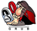
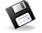

Installation
Diese Übersichtsseite soll dabei helfen, schnell Informationen darüber zu erlangen, wie man am besten die gewünschte Ubuntu-Version installiert.
Aufgeführt sind auch Seiten, die weiterführende Informationen zu Festplatten und ihrer Partitionierung, zu Upgrades, dem Bootmanager und zu individuellen Sonderwünschen bieten.
Installationsanleitungen¶

Ubuntu und seine Varianten¶
Der Standard-Desktop von Ubuntu ist seit Ubuntu 11.04 Unity. Es ist jedoch möglich, Ubuntu mit einer anderen Desktopumgebung zu benutzen, z.B. mit KDE, Xfce, LXDE, GNOME 3 mit der GNOME Shell, Ubuntu mit dem Mate Desktop oder Ubuntu mit dem Budgie Desktop. Teilweise unterscheiden sich diese jedoch in der Installation voneinander. Nähere Informationen finden sich in den entsprechenden Artikeln.
| Installation von Ubuntu und seinen Derivaten | |
| Thema | Beschreibung |
| Ubuntu | Ubuntu-Installation mit Unity |
| Ubuntu GNOME | Ubuntu-Installation mit der GNOME Shell (siehe auch GNOME Installation) |
| Kubuntu | Kubuntu-Installation mit KDE (siehe auch KDE Installation) |
| Lubuntu | Lubuntu-Installation mit LXDE |
| Xubuntu | Xubuntu-Installation mit Xfce (siehe auch Xfce Installation) |
| Edubuntu | Speziell für Schulen geeignete Version |
| Ubuntu Studio | Auf Multimedianutzung (z.B. als Tonstudio) optimierte Ubuntu-Version |
| Alternate-CD | Ubuntu-Installation im Textmodus |
| Server-CD | Installation eines Servers (siehe auch LAMP-Server) |
| EFI Bootmanagement | Ubuntu und Derivate auf Systemen mit EFI installieren |
Sonstige Installationsmöglichkeiten¶
Neben den Standardinstallationen von Ubuntu und seinen Derivaten gibt es eine Reihe weiterer Möglichkeiten, Ubuntu zu installieren. Beispiele dafür sind die Installation auf einem USB-Stick, als Dualboot neben einem anderen Betriebssystem, in einer virtuellen Maschine oder unter Windows. In den verlinkten Artikel sind nähere Informationen zu diesen Installationsarten enthalten.
| Sonstige Installationsmöglichkeiten | |
| Thema | Beschreibung |
| Apple Computer | Installation von Ubuntu auf Apple-Intel-Mac und PowerPC-Mac |
| Installation mit debootstrap | Installation von einem bestehenden Linuxsystem aus |
| Dualboot | Installation von Ubuntu auf Dual- und Mehrbootsystemen |
| Installation auf Flashmedien | Vorbereitungen zur Installation auf Flashmedien |
| Live-USB | USB-Stick als Live-System und Installations-Medium |
| Installation auf externen Speichermedien | Ubuntu dauerhaft als feste Installation z.B. vom USB-Stick nutzen |
| Minimalinstallation | Ressourcenschonende Installation auf Computern mit wenig Hauptspeicher (Alternate-CD) |
| Multi-Boot | Ubuntu, WinXP und Vista parallel installieren |
| MultiSystem | Mehrere Linux-Systeme und Bootloader parallel auf einem externen Datenträger installieren |
| Netzwerk-Installation | Start eines Minimalsystems via CD/USB. Die weitere Installation benötigt eine Internetverbindung. Einen ähnlichen Weg für lokale Netzwerke beschreibt PXE-Installation. |
| OEM | OEM-Installation für Händler und Wiederverkäufer |
| UNetbootin | Installieren von Linux ohne CD/DVD-Laufwerk |
| Wubi | Ubuntu unter Windows installieren und den Windows-Bootmanager zum Start benutzen |
Tipps zu Festplatten und der Partitionierung¶
Ein Thema, das vor einer Installation sorgfältig durchdacht werden muss, ist die Festplatten-Partitionierung. Im Wiki gibt es dazu eine Vielzahl von Seiten; allgemeine Hinweise zur Partitionierung finden sich auf der Überblicksseite Partitionierung
| Tipps zu Festplatten und Partitionierung | |
| Thema | Beschreibung |
| Linux-Partitionen unter Windows | Benutzen von Linux-Partitionen unter Windows |
| Logical Volume Manager | Fortgeschrittene Partitionierung mit LVM |
| Manuelle Partitionierung | Manuelle Partitionierung für eine Ubuntu-Installation: Schritt-für-Schritt-Anleitung |
| Parted Magic | Live-Distribution zur Partitionierung |
| Windows-Partitionen einbinden | Einhängen von Fremddateisystemen |
Upgrades zwischen Ubuntu-Versionen¶
Upgrades zwischen Ubuntu-Versionen können sich unterschiedlich gestalten. Besonderheiten gibt es insbesondere beim Sprung zwischen STS-Versionen, wenn Versionen übersprungen werden. Weitere Hinweise und Anleitungen finden sich unter Upgrade.
| Upgrades zwischen Ubuntu-Versionen | |
| Zielversion | Versionssprung |
| Upgrade Trusty auf Xenial | 14.04 LTS zu 16.04 LTS |

Bootmanager¶
Sehr ausführliche Informationen zum aktuellen Bootmanager (Bootloader) von Ubuntu finden sich unter GRUB 2. Informationen zum Bootloader, der bis Ubuntu 9.04 verwendet wurde, finden sich unter GRUB.
| Grub 2 | |
| Thema | Beschreibung |
| Grundlagen | Hintergründe, Ablauf, Linksammlung |
| Installation | Aktualisieren, Installieren und Sonderformen der Installation |
| Konfiguration | Erläuterung der Dateien zur Konfiguration |
| Reparatur | GRUB 2 wieder flott machen |

Sonderfälle und weitere Hinweise¶
Nicht immer gelingt eine Installation auf Anhieb, nicht immer erfüllt eine Standardinstallation alle individuellen Wünsche. Im Wiki sind für derartige Fälle viele weiterführende Informationen enthalten:
| Sonderfälle und weitere Hinweise | |
| Thema | Beschreibung |
| Alte Hardware | Welches Ubuntu bzw. Linux kann man auf (sehr) alter Hardware installieren? |
| Einführung für Linux Umsteiger | Besonderheiten von Ubuntu im Vergleich mit Arch, openSUSE, Fedora, Mageia, Slackware und Co. |
| Entwicklungsversion | Hinweise zur Entwicklungsversion von Ubuntu |
| LiveCD manuell remastern | Individuelle Live-CD von Hand erstellen |
| MultiCD | Multiboot-CD (z.B. mit verschiedenen Ubuntu-Versionen) erstellen |
| Problemlösungen für die Installation | Bei Problemen mit der Live-CD oder fehlgeschlagener Installation |
| Remastersys | Live-Sicherung des Systems und Möglichkeit der Rücksicherung auf ein anderes System |
| Spracheinstellungen | Wie erhalte ich ein deutschsprachiges System? |
| Ubiquity | Informationen zum grafischen Installationsassistenten aller Ubuntu Desktop-Varianten |
| Ubuntu Customization Kit | Erstellen eigener Ubuntu, Kubuntu, Xubuntu oder Edubuntu CDs/DVDs |
| Ubuntu entfernen | Deinstallation von Ubuntu |
- Erstellt mit Inyoka
-
 2004 – 2017 ubuntuusers.de • Einige Rechte vorbehalten
2004 – 2017 ubuntuusers.de • Einige Rechte vorbehalten
Lizenz • Kontakt • Datenschutz • Impressum • Serverstatus -
Serverhousing gespendet von